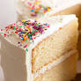

Vanilla Cake

Description
A delicious treat that you can enjoy during a birthday or whenever you want to satisfy your sweet tooth!
Ingredients
- 2 cups plain / all purpose flour
- 2 1/2 teaspoons baking powder
- 1/4 tsp salt
- 4 large eggs
- 1 1/2 cups caster / superfine sugar
- 115g / 1/2 cup unsalted butter
- 1 cup milk
- 3 tsp vanilla extract
- 3 tsp vegetable or canola oil
Steps
- Preheat oven to 180°C/350°F (160°C fan) for 20 minutes before starting the batter
- Grease 2 x 20cm / 8” cake pans with butter, then line with parchment / baking paper.
- Whisk flour, baking powder and salt in a large bowl. Set aside.
- Beat eggs for 30 seconds on speed 6 of a Stand Mixer fitted with a whisk attachment, or hand beater.
- With the beater still going, pour the sugar in over 45 seconds.
- Then beat for 7 minutes on speed 8, or until tripled in volume and white.
- While egg is beating, place butter and milk in a heatproof jug and microwave 2 minutes on high to melt butter (or use stove). Do not let milk bubble and boil (foam ok). Don’t do this ahead and let the milk cool
- When the egg is whipped, scatter 1/3 flour across surface, then beat on Speed 1 for 5 seconds. Add half remaining flour, then mix on Speed 1 for 5 sec. Add remaining flour, then mix on Speed 1 for 5 – 10 sec until the flour is just mixed in. Once you can’t see flour, stop straight away.
- Pour hot milk, vanilla and oil into the now empty flour bowl. Add about 1 1/2 cups (2 ladles or so) of the Egg Batter into the Milk-Butter (don't need to be 100% accurate with amount). Use a whisk to mix until smooth – you can be vigorous here. Will look foamy.
- Turn beater back on Speed 1 then pour the Milk mixture into the Egg Batter over 15 seconds, then turn beater off.
- Scrape down sides and base of bowl. Beat on Speed 1 for 10 seconds – batter should now be smooth and pourable.
- Pour batter into pans.
- Bang each cake pan on the counter 3 times to knock out big bubbles
- Bake 30 minutes or until golden and toothpick inserted into centre comes out clean.
- Remove from oven. Cool in cake pans for 15 minutes, then gently turn out onto cooling racks. If using as layer cakes, cool upside down – slight dome will flatten perfectly. Level cake = neat layers
- Frost with frosting of choice, or cream and fresh berries or jam.
- Enjoy!
Back